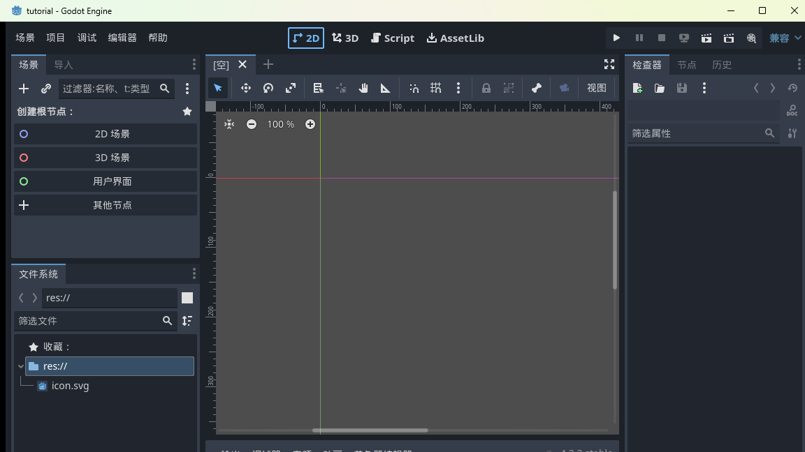
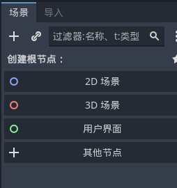
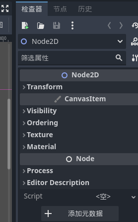
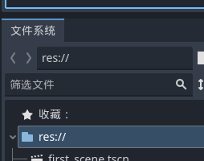
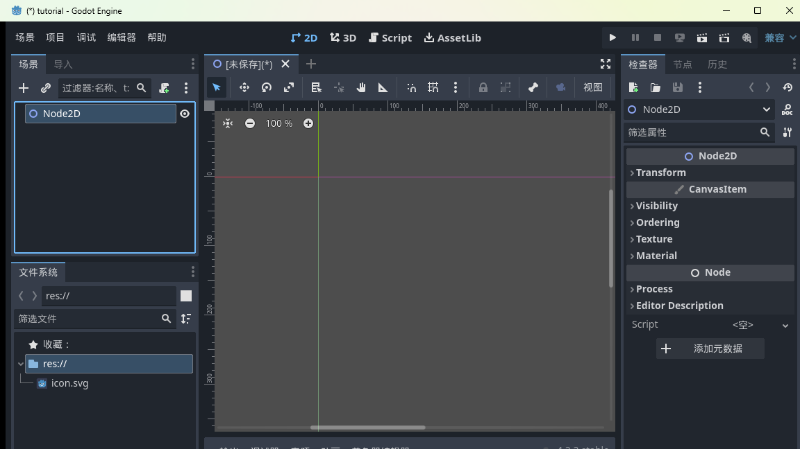
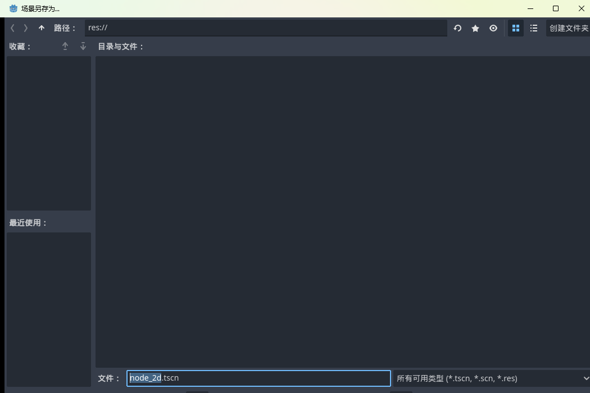
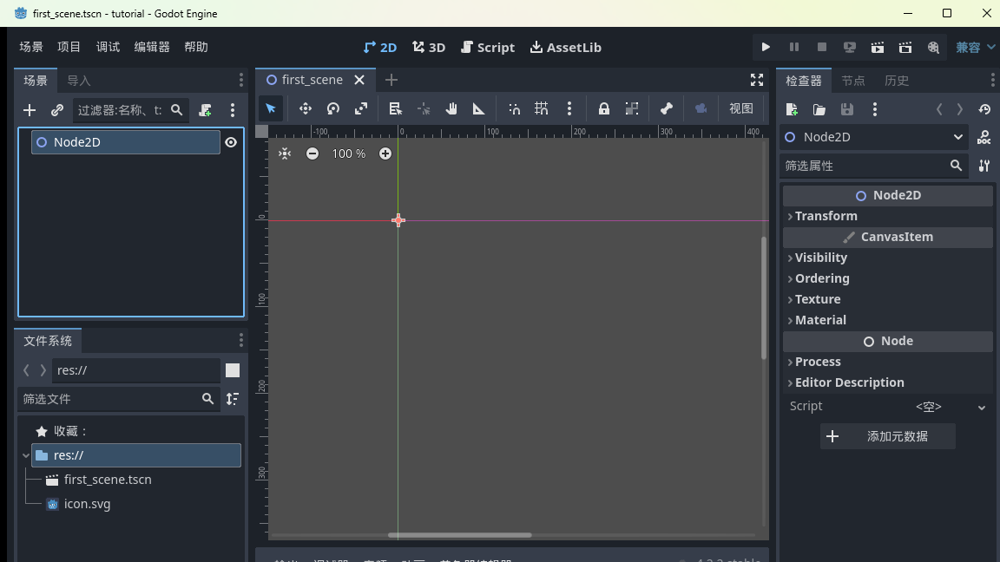

大家好，我是「山岚的运维笔记」。
上篇我们装好了 Godot、建好了空项目。今天把编辑器里里外外逛一遍——顺便，做出你人生第一个场景。唔使急，全程靠点鼠标就得。
第一次打开编辑器咩感受，我记到好清楚：左边一列、右边一列、中间一大片，五六个面板，个个写着奇奇怪怪的名字。像不像第一次坐进飞机驾驶舱？
放心，开 Godot 这架"飞机"，常用仪表比驾驶舱少好多。
编辑器顶上有三个标签：2D、3D、Script（旁边的 AssetLib 是在线素材库，暂时当它透明）。
2D 是做 2D 游戏的工作区，我们整个系列都住这里；3D 做三维的；Script 是写代码的地方，自带代码编辑器。
点一下 2D，中间变成一块带标尺的平面——这就是你以后天天见的工位：

左上角这个面板叫场景，是 Godot 最重要的一块：

佢而家空寥寥，得「创建根节点」四个快捷按钮。
这里要灌一个 Godot 的核心概念：万物皆节点，节点组成树。
讲个例：一个游戏关卡是一棵树——根上挂个「关卡」节点，底下分出「玩家」「墙壁」「箱子」几条枝，玩家底下还挂着「外观」「碰撞体」几片叶。左边这个面板，就是给你打理这棵树的。
而家唔使完全搞懂，有个印象就得，后面每篇你都同这棵树打交道，自然就识喇。
右上角叫检查器，是场景面板的孪生兄弟：

规矩好简单：点中场景树边个节点，呢度就显示佢全部可调参数——位置、大小、颜色、贴图，统统喺呢度。
以后听到「改下它的 Transform」「把图拖到 Texture 上」，讲嚟讲去都系呢度操作。左边拣人，右边调参，就系咁配合。
左下角是文件系统面板，项目文件夹里所有文件都显示在这：

图片、音效、场景、脚本，放进项目文件夹的东西它都认得。常用的文件夹还能拖进「收藏」，跟浏览器书签一个道理。
逛完了，来真的。
第一步，场景面板点「2D 场景」那个快捷按钮——场景树里立刻出现一个叫 Node2D 的节点，检查器同步列出一堆属性：

这棵树现在是一根光杆树干。Node2D 是个「带 2D 位置信息的空节点」，自己不显示任何东西，但最常用——之后墙啊箱子啊都往它身上挂。
第二步，Ctrl+S 保存。弹出保存对话框，默认名是 node_2d.tscn，我们改成有意义点的：

改成 first_scene.tscn，回车。
小知识：.tscn 是 Godot 场景文件的后缀，纯文本格式，用记事本都打开得了，不过没必要，编辑器会帮你打理。
第三步，睇下成果——标题栏星号冇咗，文件系统多咗个 first_scene.tscn：

恭喜，第一个场景正式落袋。「建场景、改名、存档」呢套动作，之后你会重复几百次，今日算出师喇。
今天认识的面板，分工好清楚：场景面板管结构，检查器管属性，文件系统管资产，加中间的视口，四件套齐了。
下一篇：《Godot 入门实战 03：让场景跑起来》，讲主场景是什么、怎么按 F5 让游戏窗口真正弹出来。
有用就点赞、点一下在看；后面仲有二十来篇，关注「山岚的运维笔记」唔迷路。评论区吹水都得，有问必回。
下一篇见。
（配套工程在 GitHub 的 Boxman 仓库 tutorial 分支，每篇一个进度 tag，随时落对应版本。）